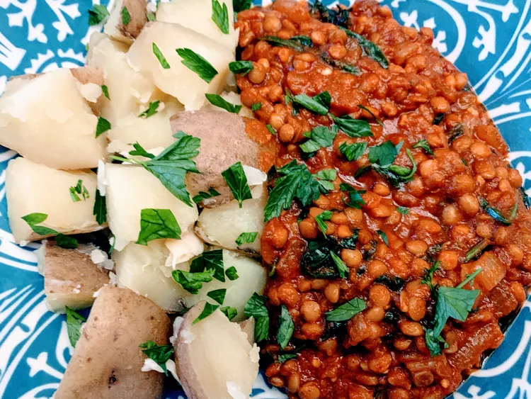

Red Lentil Curry

Description:
This red lentil curry is rich and hearty. It's great as a main meal rather than a side dish like the more traditional Indian dhal.
Don't let the ingredient list faze you — this is an easy dish to make. This dish is excellent served with basmati rice.
Ingredients:
- 2 cup lentils
- water
- 1 large onion
- 2 tablespoons curry paste
- 1 tablespoon curry powder
Directions:
- Wash lentils in cold water until water runs clear.
- Put lentils in a pot with enough water to cover; bring to a boil and reduce heat to medium-low. Cover and simmer, adding water as needed to keep lentils covered, until tender, 15 to 20 minutes. Drain.
- Heat vegetable oil in a large skillet over medium heat; cook and stir onions in hot oil until caramelized, about 20 minutes.
- Mix all the spices and cook for 1 to 2 minutes
- Stir in tomato puree and lentils; cook until warmed through.
- Enjoy!